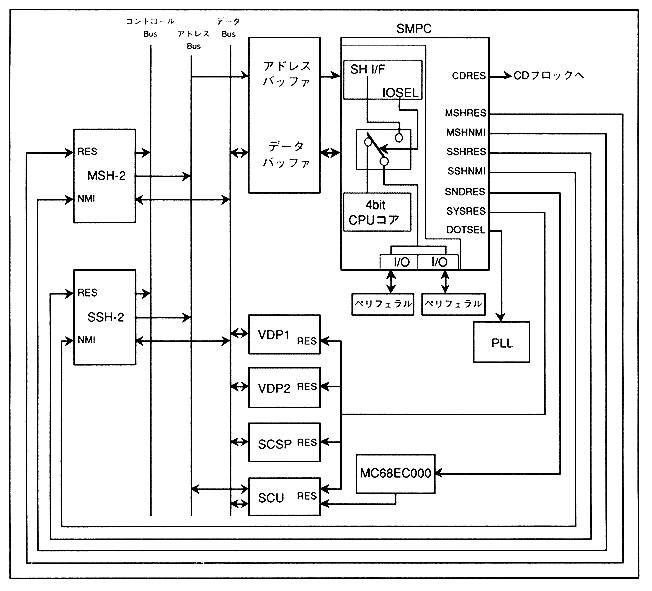

SMPC manages NMI requests to the master SH-2 when the Saturn system reset control when the power is turned on and when the reset button is pressed. Also, commands from SH-2 enable / disable each LSI, set and get calendar clock, collect data from peripherals, etc. Furthermore, the horizontal resolution is switched to 320 dots or 352 dots by the clock change command.
Figure 1.1 SMPC system configuration

∙ SMPC has two 7-bit parallel I / O ports.
Access to the I / O port is controlled by the firmware inside the SMPC, and two access methods, the SMPC control mode that outputs collected data to the SMPC output register (OREG) and the SH-2 direct mode that can be accessed directly from the SH-2. You can select. Refer to Chapter 3 for details of SMPC control mode and SH-2 direct mode.